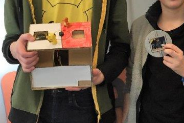
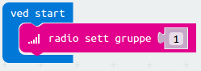
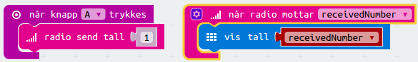
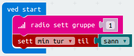
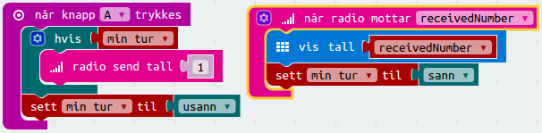
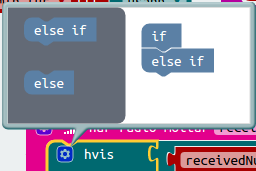
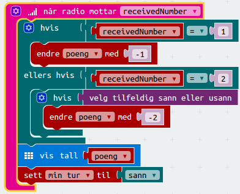
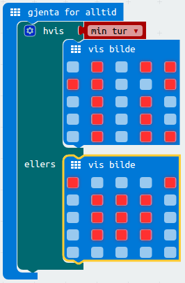

Pokebit Battle er et Pokemon-spill for to micro:bit'er. Hver micro:bit styrer en
pokemon, og disse slåss mot hverandre. Pokemon'ene kan gjøre to typer angrep:
A-knappen gjør alltid 1 skade. B-knappen kan gjøre 2 skade, men kan også
bomme.

Steg 1: To micro:bit'er snakker sammen
Før micro:bit'ene kan slåss mot hverandre må vi få dem til å snakke sammen.
Sjekkliste
Start et nytt micro:bit-prosjekt. Vi skal bruke PXT-editoren som du finner på
pxt.microbit.org/#lang=no.
For at micro:bit'ene skal snakke sammen skal vi bruke Radio. Ved å bruke
radio-funksjonene kan en micro:bit sende en melding til en gruppe, og alle
micro:bit'er som er i samme gruppe kan motta meldingen.
Det første vi må gjøre i alle prosjekter som bruker radio er å sette hvilken
radio-gruppe prosjektet skal bruke. Gruppen er et tall mellom 0 og
255. Legg klossen radio sett gruppe inn i ved start-skriptet.

Radio-gruppe
Hvilken gruppe vi setter er viktig. Det er to ting du må ta hensyn til:
Alle micro:bit'er som skal snakke sammen må bruke samme gruppe.
Alle andre micro:bit'er i nærheten som bruker radio må bruke en annen gruppe.
Det er derfor lurt å prøve å velge et litt uvanlig tall (ikke 1 som i
eksempelet over) mellom 0 og 255. Om dere er mange i samme rom kan dere
spørre veilederen om å gi dere alle hvert sitt gruppenummer.
Sjekkliste
La oss sende en melding når vi trykker på A-knappen. Lag et enkelt skript
med når knapp A trykkes- og radio send tall-klossene.
For at vi skal motta meldingen trenger vi et skript til. Hent først frem en
radio-kloss som sier når radio mottar receivednumber. Pass på at klossen
sier receivednumber. Siden vi sender et tall må vi også motta et tall (ikke
en tekst).
Inntil videre vil vi bare vise frem tallet som ble sendt som melding. Bruk
derfor en vis tall-kloss.
Tallet vi skal vise er tallet som ble mottatt av radioen. Dette tallet huskes
på av variabelen receivednumber. Finn denne i Variabler-kategorien, og
legg den til på vis tall-klossen.

Test prosjektet
Klikk på A på simulatoren.
Vi tester først prosjektet på micro:bit-simulatoren til venstre på skjermen.
Klikk på A-knappen. Simulatoren oppdager da at vi bruker radio og lager en
ny micro:bit som kan motta meldingene våre.
Klikk på A-knappen en gang til. Du skal nå se at den andre micro:bit'en
viser tallet den første micro:bit'en sendte.
Radio på micro:bit
Når vi bruker radio trenger vi som regel minst to micro:bit'er for å teste. Det
enkleste er derfor å jobbe sammen på hver sin datamaskin.
I dette prosjektet vil vi bruke den samme koden på begge micro:bit'ene. Men det
er også mulig å bruke litt forskjellig kode så lenge man er på samme gruppe.
Prøv gjerne å send forskjellige tall til hverandre.
Steg 2: Min tur og din tur
Hvordan kan vi passe på at vi spiller på tur?
Sjekkliste
For at spillet vårt skal fungere må vi passe på at man bare får angripe en gang
og deretter er det den andre spilleren sin tur. Hvis ikke blir det bare en kamp
om å trykke raskest mulig på knappene. Til dette skal vi bruke en variabel.
Klikk på Variabler-kategorien og Lag en variabel. Kall den nye
variabelen min tur.
Gi variabelen verdien sann ved start. Klossen sann finner du i
Logikk-kategorien.

Nå endrer vi skriptet når vi trykker på A-knappen, slik at meldingen bare
blir sendt hvis det er vår tur. Til dette trenger du en hvis-kloss og
variabelen min tur.
Vi må også sette verdien av min tur til usann når vi trykker på
A-knappen, for at vi ikke skal kunne sende mange meldinger på rad.
Til sist må vi sette min tur tilbake til sann etter at vi mottar en
melding (siden da har motspilleren spilt).

La oss også programmere B-knappen. Den skal gjøre omtrent det samme som
A-knappen. Den eneste forskjellen er at den sender tallet 2. Lag et
skript for når knapp B trykkes ved å kopiere skriptet for A-knappen, og
endre tallet.
Test prosjektet
Bruk simulatoren eller last ned til to micro:bit'er
Sjekk at A og B sender forskjellige tall.
Pass på at hver micro:bit bare får sende en melding før det er den andre
micro:bit'en sin tur.
Steg 3: Vi gjør skade!
Nå skal vi også holde styr på hvor mye skade vi gjør.
Husker du reglene for spillet vårt?
A-knappen gjør alltid 1 skade.
B-knappen kan gjøre 2 skade, men kan også bomme.
Sjekkliste
For å huske hvor mye skade som har blitt gjort trenger vi en variabel til. Lag
en ny variabel, og kall den poeng.
Ved start setter vi poeng til 10. Legg til en kloss som gjør dette.
For å registrere skade må vi forandre en del på skriptet som mottar
radio-meldingen. Legg først til en hvis-kloss.
Vi skal teste for to forskjellige situasjoner: Enten at vi mottar 1
(A-knappen er trykket) eller at vi mottar 2 (B-knappen er trykket). Vi
trenger en andre test på hvis-klossen.
Klikk på tannhjulet på hvis-klossen. Dra inn en else if under if i det
nye vinduet. Klikk på tannhjulet igjen for å stenge dette vinduet.

Den første testen (hvis) er om receivednumber er lik 1. Om den er det
skal vi endre poeng med -1. Legg til klossene som gjør dette.
Den andre testen (ellers hvis) sjekker om receivednumber er lik 2.
Denne er litt mer komplisert fordi vi skal enten gjøre 2 skade eller ingen
skade. Vi kan gjøre dette med en ny hvis-test. Til denne nye
hvis-klossen kan vi koble en velg tilfeldig sann eller usann-kloss fra
Matematikk-kategorien. Dette gjør at det er tilfeldig om hvis-testen slår
til eller ikke. Endre poeng med -2 inne i denne hvis-testen.
Til slutt viser vi poeng og setter min tur til sann. Det nye skriptet
blir da noe som dette:

Test prosjektet
Bruk simulatoren eller last ned til to micro:bit'er
Telles poengene nedover?
Gjør A-knappen alltid 1 skade? Gjør B-knappen av og til 2 skade, og av
og til ingen skade?
Steg 4: Videreutvikling
Vi har nå grunnlaget for spillet vårt, men det er mange muligheter til å ta det videre.
Legg på litt enkel grafikk som gjør det tydeligere at ting skjer, og hvem sin
tur det er. For eksempel vil dette skriptet vise 1 ved siden av
A-knappen og 2 ved siden av B-knappen når det er din tur, og et
bilde av Pikachu når det er motstanderen sin tur.

Lag en sjekk for om spillet er slutt, og gi spillerene beskjed om de vant eller tapte.
Du kan teste på om poengene går ned til 0 (eller mindre). I såfall har man
tapt. Da kan du også sende en melding over radio til den andre spilleren om
at den vant.
Den som starter spillet har en liten fordel. Kan du utjevne fordelen med å av
og til gi den som ikke starter et ekstra poeng?
Dette gjøres enklest ved å ha to litt forskjellige skript på de to
micro:bit'ene. Du kan da sette min tur til usann ved start på den ene
micro:bit'en, og tilfeldig gi den et ekstra poeng.
Lag lydeffekter. Om du kobler en buzzer eller høytaler til micro:bit'en kan du
også lage lydeffekter til spillet. Både når noen angriper og når spillet er
slutt.
Kan du finne på flere typer angrep? For eksempel om man trykker A og B
samtidig eller rister på micro:bit'en?
Lag en slags konsoll for micro:bit'ene. For eksempel kan du bruke en pappeske,
og feste micro:bit'ene og kanskje andre pokemon-effekter du har til esken.
Forbedre denne siden
Funnet en feil? Kunne noe vært bedre? Hvis ja, vennligst gi oss tilbakemelding ved å lage en sak på Github eller fiks feilen selv om du kan. Vi er takknemlige for enhver tilbakemelding!